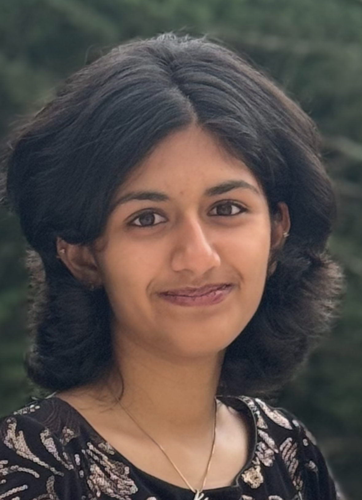
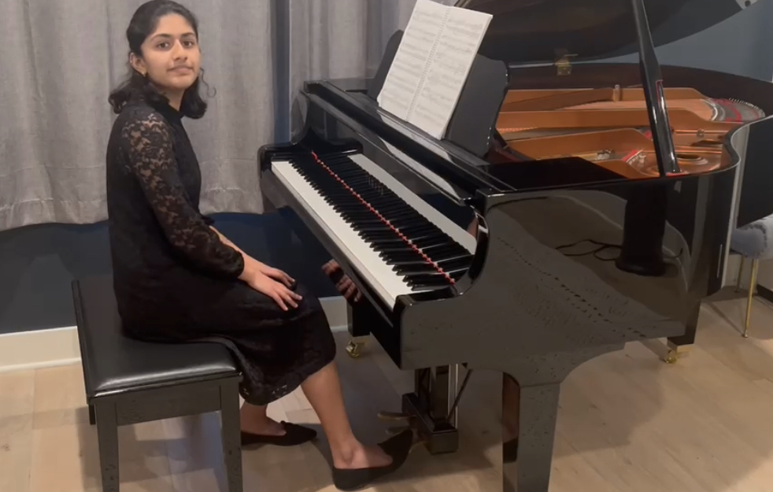

About Me
Anushka Tongle · Rising junior · Canyon Crest Academy (Class of 2028)
Hi! I’m Anushka Tongle, a rising junior at Canyon Crest Academy in San Diego with a deep interest in how science, health, and everyday decisions intersect in real life. Whether I’m in the classroom, preparing for competitions, volunteering in the community, or learning at home through hands-on experiences like continuous glucose monitoring and mindful nutrition, I’m always looking for ways to connect scientific knowledge to practical impact.
I am an active competitor and leader in HOSA-Future Health Professionals and Science Olympiad. Through HOSA, I have explored subjects such as Pathophysiology, while Science Olympiad has given me the opportunity to study Anatomy & Physiology, Ecology, and Remote Sensing. As President of my school’s HOSA chapter, I lead initiatives that promote student engagement, collaboration, and leadership within our organization. I have represented my school at the HOSA International Leadership Conference and competed at the state level in Science Olympiad, experiences that have strengthened both my scientific knowledge and passion for problem-solving. Beyond competition, I enjoy giving back to my community by coaching and mentoring younger students at Pacific Trails Middle School, helping inspire the same curiosity for science and learning that continues to motivate me every day.

Music and Piano
Piano has been a big part of my life. I completed 10 years in MTAC with state honors. I have competed at Southwestern Youth Music Festival, earning accolades. Music isn’t only performance for me: it’s also a way to connect with people, whether that’s playing for spinal cord injury patients at VA Hospital San Diego or older adults living with Alzheimer’s disease.
